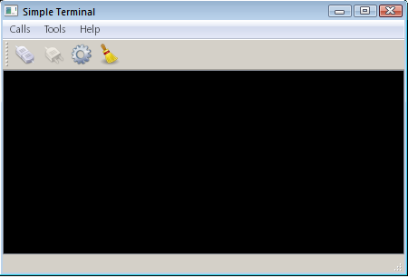

The Terminal example shows how to create a terminal for a simple serial interface by using Qt Serial Port.

This example shows the main features of the QSerialPort class, like configuration, I/O implementation and so forth. Also, the class QSerialPortInfo is invoked to display information about the serial ports available in the system.
QSerialPort supports two general programming approaches:
In this example, the asynchronous approach is demonstrated. The Blocking Simple Terminal example illustrates the synchronous approach.
Our example contains some GUI widgets:
The serial port is instantiated in the MainWindow constructor. The main widget is passed as the parent, so the object deletion happens automatically according to the the parent and child mechanism in Qt:
...
The only QSerialPort signal invoked in this example is QSerialPort::readyRead(), which shows that new data has been received and hence available:
...
...
Clicking on the Connect button invokes the openSerialPort() slot:
In this slot, the settings are read from SettingsDialog and an attempt is made to open and initialize the serial port accordingly. If successful, the status bar displays a message that the opening was successful with the given configuration; otherwise, a messagebox is displayed with the appropriate error code and message. If the serial port settings have never been called SettingsDialog, then the terminal attempts to open the port with the default settings: 9600 8N1.
Clicking on the Disconnect button invokes the closeSerialPort() slot:
In this case, handled by the closure of the serial port.
Typing characters in the console invokes the writeData() slot:
This slot sends the characters typed in the given Console widget to the serial port.
When the serial port receives new data, the signal readyRead() is emitted, and that signal is connected to the MainWindow::readData() slot:
This slot reads the data from the serial port and displays that in the Console widget.
Clicking on the Configure button invokes the show() slot which belongs to the SettingsDialog widget.
This method displays the SettingsDialog in which the user can choose the desired serial port, see the information about the selected port, and set the desired parameters of the given serial port.
See also Blocking Simple Terminal Example.